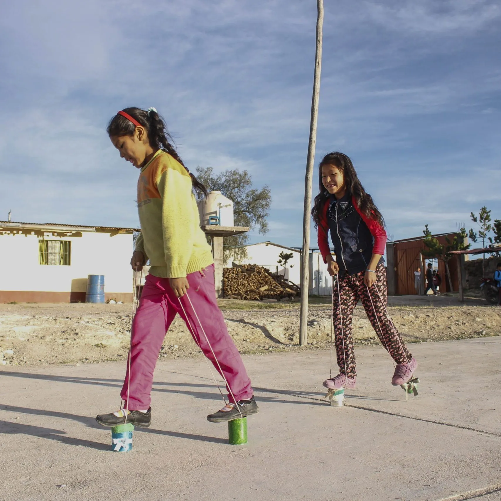
Nuestra Historia
Desde los Andes peruanos, construyendo puentes entre la vulnerabilidad y la profesionalización.
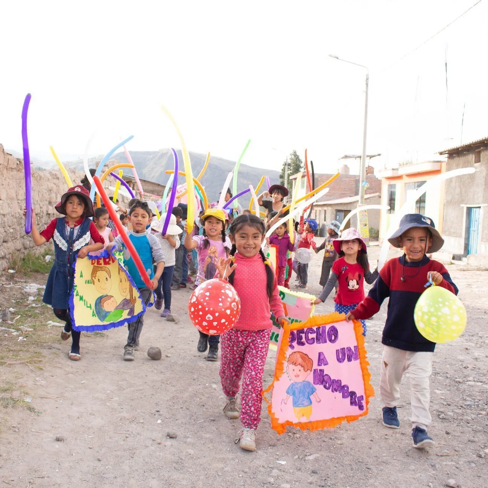
Una convicción que cambió todo
Mama Alice nació de la convicción de que ningún joven debería ver limitado su futuro por su lugar de nacimiento. En un contexto donde el conflicto armado dejó cicatrices profundas, nuestra fundadora decidió actuar.
Hoy somos un ecosistema integral que abarca la salud emocional, la educación básica y la formación técnica, con resultados medibles que hablan por sí solos.
Lo que nos guía cada día
Tres principios que definen cómo trabajamos y cómo acompañamos a cada joven en su proceso.
Empatía
Cada joven es escuchado, comprendido y acompañado desde su realidad personal, sin juicios.
Transparencia
Cada recurso se audita y se reporta. Nuestros donantes son nuestros socios en la misión.
Sostenibilidad
No creamos dependencia. Formamos para la autonomía profesional y la independencia plena.
Nuestra trayectoria
Más de una década construyendo futuro en Ayacucho. Desliza hacia abajo para viajar en el tiempo.
Fundación
Se establece Mama Alice como proyecto de asistencia social en las comunidades rurales de Ayacucho, liderado por Frederique Kallen.
Centro Comunitario
Se inaugura el primer centro de soporte psicosocial y refuerzo escolar, brindando refugio y educación a más de 120 niños y adolescentes.
Hospitality Center
Nace el centro de formación técnica en gastronomía y hotelería, forjando alianzas clave con el creciente sector turístico de la región.
85% Inserción
Bajo la dirección local, se alcanza la tasa de inserción laboral más alta entre las ONGs de formación técnica en todo el sur andino.
2,500 Vidas
Se supera el asombroso hito de dos mil quinientos jóvenes formados, sanados y acompañados integralmente hacia un futuro brillante.
Las personas detrás del cambio
Mantenemos una estructura horizontal para coordinar rápidamente entre directiva, voluntarios y beneficiarios locales.
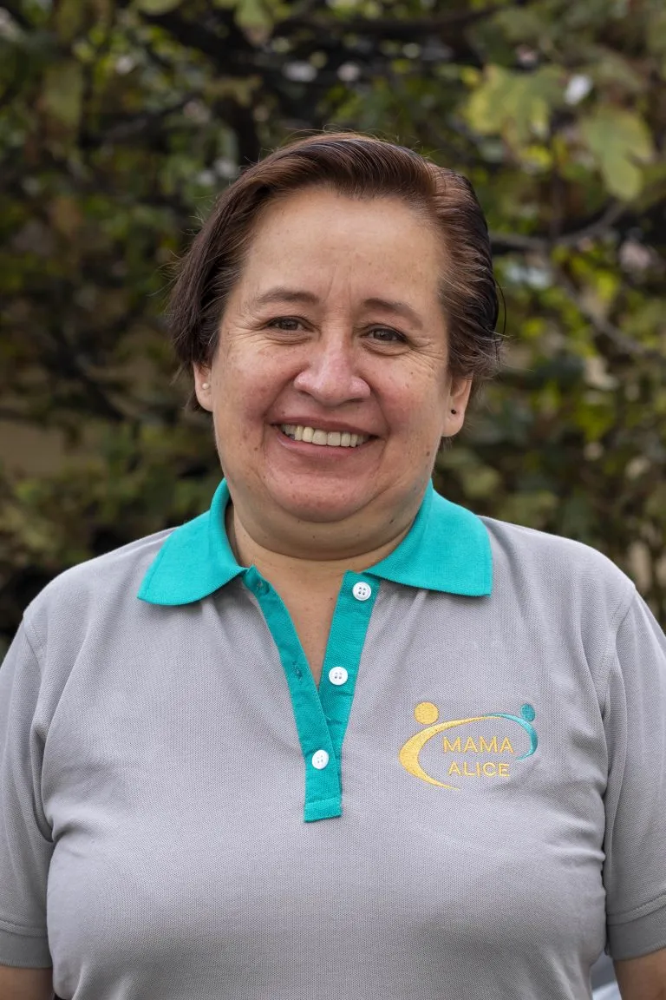
Elba Zegarra Vila
Directora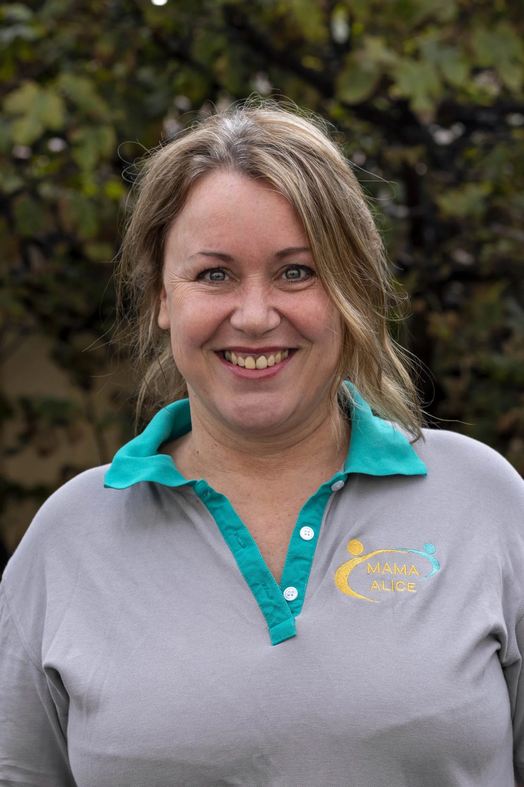
Frederique Kallen
Fundadora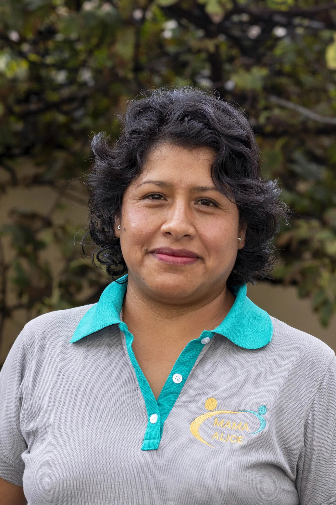
Flor de Maria Cuenca
Contadora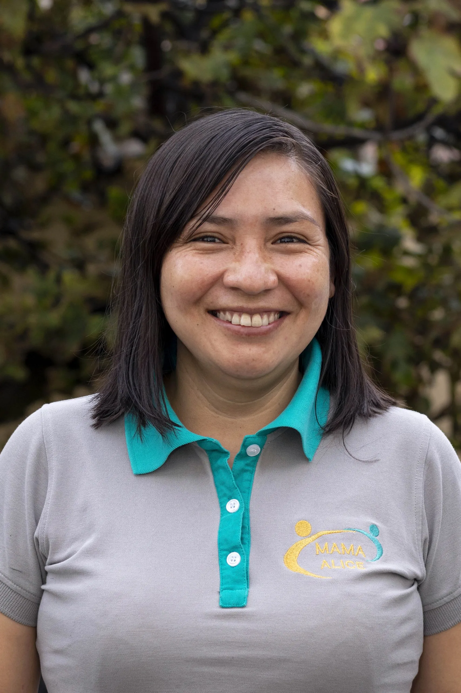
Zoila Rosales
Trabajadora Social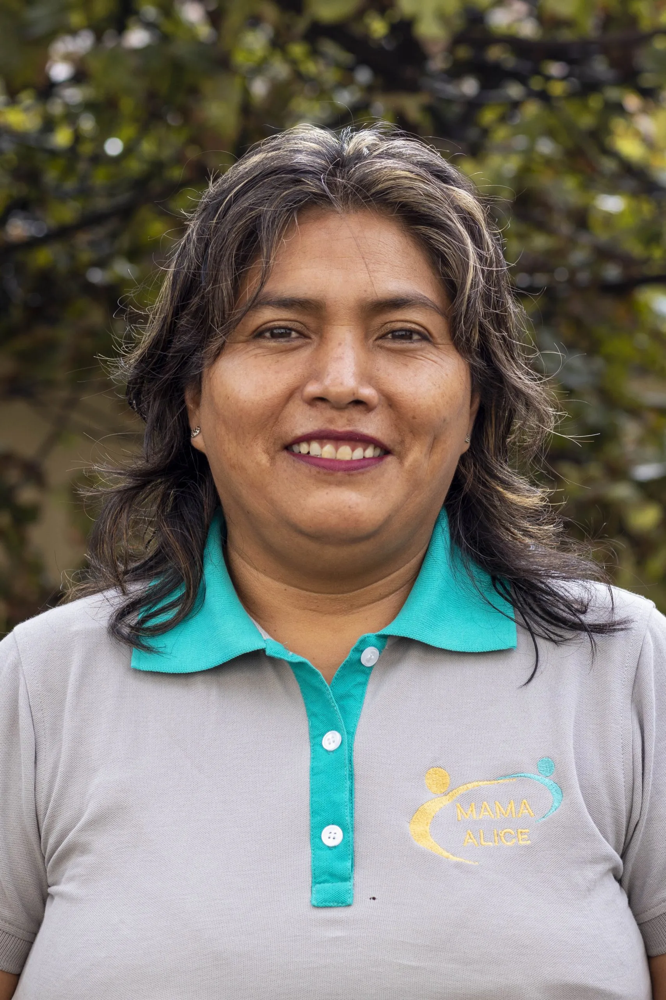
Marivel Palomino
Educadora Secundaria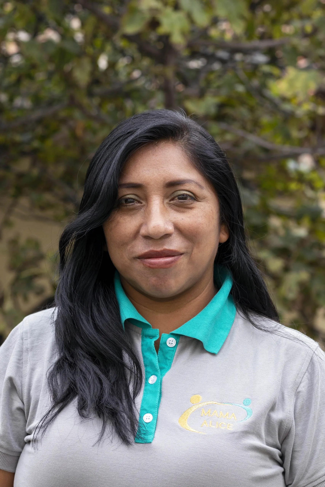
Eskarly Huamani
Educadora Inicial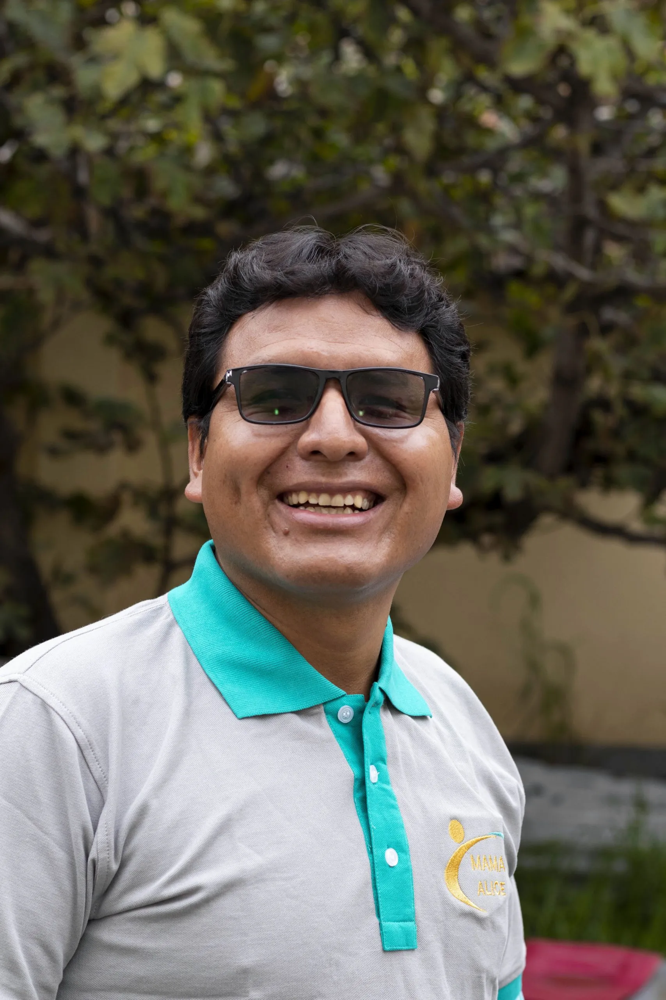
Ferreol Janampa
Educador Secundaria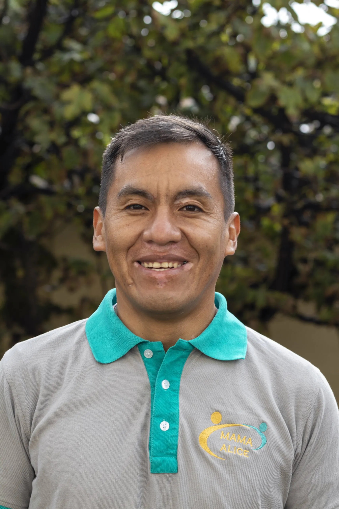
Jorge Luis Allca
Psicólogo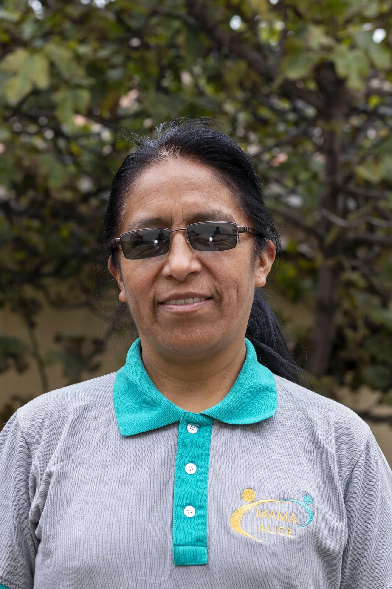
Lucia Inca Diaz
Psicóloga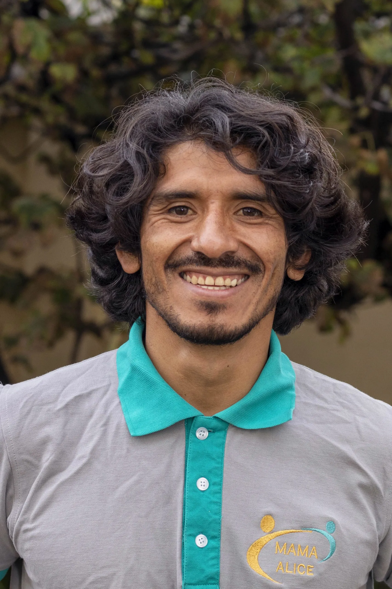
Enrique Montes
EducadorVoluntariados y
Pasantías
Con la pandemia de COVID-19 en gran parte superada, ¡nuevamente estamos aceptando voluntarios y pasantes nacionales e internacionales!
Si sientes que puedes contribuir a nuestra misión de empoderar a los jóvenes en Ayacucho, estaríamos muy felices de considerar tu solicitud. Solo pedimos que te sumerjas y respetes plenamente la cultura local.
Postular ahora →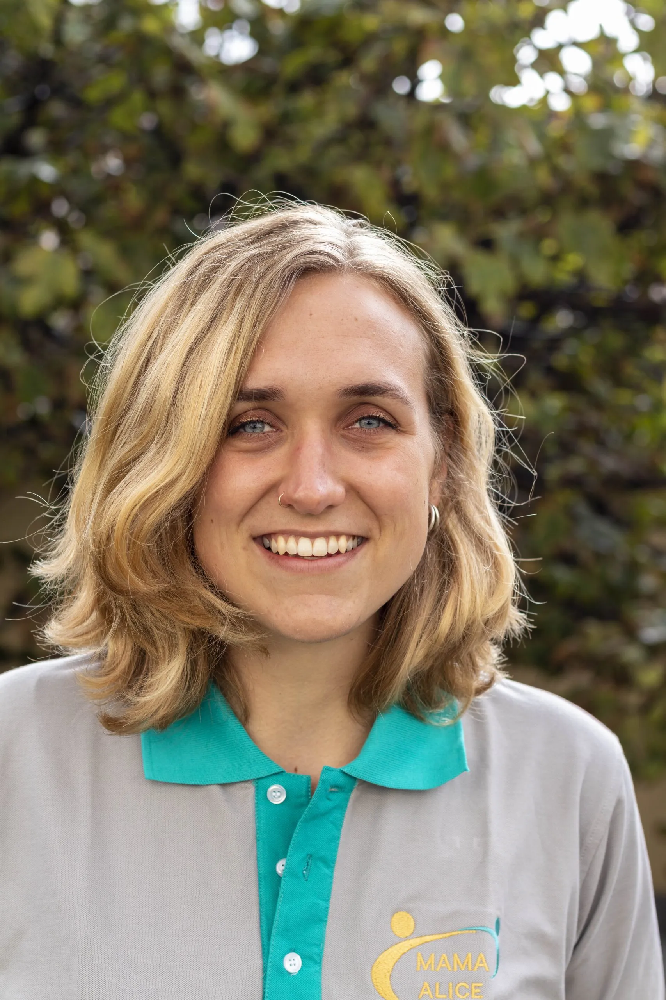
a
Nosotros
¿Quieres formar parte del cambio?
Conoce nuestras oportunidades de voluntariado, donación o alianza empresarial.